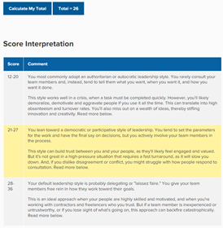

Figure1- My Profile
Hi everyone thank you for taking the time to look at my profile. My Name is Ron Shaharit. I amo riginally form Israel and I moved to Australia during the end of 2009. Hebrew is my first language and English is my secondary language. I am a Fourth-year student studying Bachelor of Engineering Civil and Infrastructure (Honors) at RMIT University. I have also completed my first internship as a Vocational Student Engineer at Port of Melbourne. For the last eight years I have been working as a basketball referee and from the beginning of 2021 I work as a high school math’s tutor.
I am a current basketball player and was previously a referee. I can speak two languages, both English and Hebrew. I used to play competitive chess. I enjoy swimming and am currently learning to play the keyboard. My favorite song to play is “Pirates of the Caribbean- He is a Pirate”.
So far, I am interested on how IT systems and AI works worldwide. IT similar to mathematics is a universal language used in the modern virtual world. It is a way to interact with others regardless of physical placement. It provides convince for a long-distance connection and communication between friends and family. Because of these amazing features that allow communication through gaming and other mediums, my interest in IT expanded to systems and how IT utilizes them.
My interest in IT started when my friends were teaching me about computer parts. From learning about the externals of how laptops and computers work, I developed an eventual interest in learning code. Although self-learning it is a challenge, I hope that by studying a variety of code I could find a more specific passion in IT. Also, as I aim to continue to a master’s degree in either civil engineering or IT, I hope that this unit will act as a good starting point for me to understand which field I am the most interested in.
Last year in RMIT, I chose a unit about artificial intelligence. I learned about the fundamentals of python and data analyst application such as Weka, along with some very interesting AI topics. Furthermore, by doing some research on how AI could be implanted in our fields of study, it helped me be more confident and push myself to try learning more about how AI works with IT. Artificial intelligence is one of the many interesting fields that IT has to offer, and I hope to continue to improve my understanding on how to use AI for a variety of projects. Important to mention that my interest in AI helped develop my project idea for the assignment. This will be introduced later in my profile.
RMIT is considered to be a top university in Australia. It was my first choice after finishing VCE as I have heard that the university is very well connected in the civil engineering industry. I hoped that these credentials will make it easier to find a job after graduating. Also, the university has a very strong engineering and IT program which was my key focus on why I chose to study in RMIT. As I hope that once I finish, I will have more tools and skills compared to other graduates.
I expected to learn all the fundamentals required to become a civil engineer with a lot of real-world applications such as laboratories and practical’s. Furthermore, on how to use civil programs such as space gas, AutoCAD and BIM confidently. With these fundamentals well understood, I except to be well incorporated in the workforce that civil engineering has to offer. These include fields in the water, steel, concrete, transport, structural, geotechnical, and building information modeling industries. Important to mention that the fields named previously can be intertwined when working as a civil engineer which I hope could provide me with an exciting and challenging career.
My degree in civil engineering should have elements for my ideal job. If I do decide to continue my studies in the civil department, I hope to find work as a structural engineer or a water/ port engineer. This is my main interest as I have experienced a student engineering job with the port of Melbourne during my second year of studies. However, I may plan to continue study a master’s program in IT. Therefore, I would like to eventually land a job in one of the many fields’ information technologies has to offer. As I do have a better understanding for “my ideal job” based on my current degree, I have decided to choose to look for a civil engineer job with a senior position attached. The job shown below properly represents the outcome of a civil engineer with many years of experience in the structural field. The example shown below was taken from “seek.com.au”(SEEK, 2022).

Figure 2- Civil Engineer Senior Position Advertisement
Senoir Civil Engineering PostionThis position inspects urban design projects developed by the Delta Consulting Engineers group. The job allows engineers to review CAD drawings and evaluate its design applications in the real world. These include but not limited to roads, drains, sewers, water reticulation and other projects that may be done by the Delta group. As this job puts heavy emphasis on heaving experience of using AutoCAD it is currently my most ideal job as I find it’s the best program to interact and construct appropriate designs. Although another program which may also be desired to understand cad drawings in 3D is BIM programs such as the Revit BIM software. I do believe that utilizing such programs correctly along with understanding application of the Australian Standards are the most important skills needed by a civil engineer to succeed in the industry.
Students were asked to complete three personality tests to better understand what companies may require from applicants. The three test that will be discussed below are the Myers-Brigg’s test, A learning Styles Test and a leadership style test. Important to mention that the learning and leadership test were chosen by me. These specific test as were chosen as I believe they are very desirable in the workforce. The tests mentioned above will be expanded upon in their respective sections.
Figures 3 & 4- 16 Personalities Results
16personalities Test ResultsAfter completing 16Personalities test (NERIS Analytics Limited, 2011) my result was Protagonist. The test describes a protagonist as an individual that has a positive effect on people they surround themselves with.
For me, these test results highlight some of my good traits which may have led to a protagonist outcome. Throughout my time in a variety of team situations I tend to get input from others around me as well as trying to help to reach the goal. Being involved with a positive mindset tends to affect others in the group to try to their hardest in achieving the desired outcome.
For example, my role as a basketball player. My job on most teams that I have played for is point guard. His job is to figure out what is the best way to bring the potential out of others in order to win the game. By understanding the different angles on how to try different method to become more effective on the court, I learned a better way win games. I believe that this could have led to teach and allow my students to understand mathematics. It takes a lot of patience to help guide students to fully understand the material by looking at the same content from new unique perspectives and committing time outside of scheduled lessons to fully help them understand to content. With these examples I do hope that the test did truly mirror my real-life actions thus far as a team leader and team player.
When forming a group, I tend to look for people with different skillsets that help to cover the groups individual weaknesses. For example, some may be stronger in coding whilst others enjoy writing or designing websites. I hope that the team in this unit can work well as a unit to complete the assignments scheduled ahead throughout the semester. By working as a team and applying team members input should help each other and more importantly the final groups goals.

Figure 5- Education Planner learning style test results
Education Planner Test ResultsThe outcome of the education planner learning style test (Educationplanner.org, 2011) is “visual learner”. This in my opinion is a good description on how I learn both university material and other activities such as piano and drawing. I find it much easier to draw diagrams or watch tutorials in order to understand things well. As when I start most new things, I tend to watch the same lesson multiple times before I can achieve a similar level of understanding as displayed by the teachers. For example, when I started to learn piano without understanding notes well, I found that following finger movements from the song helped me in a stage where learning position based on a music sheet proved challenging. Visually, repetition was key to succeed instead of trying to memorize the notes. That’s some of the reasons why I believe that I am primarily a visual learner.
As I hope that most team activities such as group meetings can be arranged outside of class on messenger or Microsoft teams. As visually viewing materials should help to understand my dedicated task the most. Hopefully, by following team members instructions in areas I may be unsure off, I would learn and pick up new skills throughout the assignments.
Furthermore, having multiple people with different learning styles should prove beneficial as remembers can learn different angles of the same task. Also, it could teach perspectives and understand how group members came to the conclusions to certain tasks. Therefore, it could enhance everyone’s experience when working on group tasks together.
My score for this test was twenty six out of thirty six. My result number affiliation is shown below.
Figure 6- Comment Card for mindtools leadership test result
Leadership Test ResultsThe numbers reflected on a how well I should theoretically fit in a group. The test reflected well from the previous two tests, showing similar signs such as actively involving team members in the group projects. By actively engaging with the team, I hope to resolve any conflicts before the have time to expand into uncomeatable cases that could cause discomfort to its members. However, I do disagree with the statement of not being able to face adversary a not adapting in difficult situations. Over the years, by applying myself in a variety of default on the spot situations helped me outcome hardships. An example of this is from my previous job as a such as basketball referee. Apart of the job was to constantly make the right calls and think on the fly. The job proved difficult when the correct call was not match to what transpired in the game. By adapting and learning through in game mistakes over the eight years I have been a referee I became a lot better on thinking quick on my feet I and apply what learned in other situations as well such as other group confrontations.
If the results do mirror my behavior when working in a group, making sure that all group members are happy with each other, and their tasks is essential. Arguments and miscommunications should be handled as soon as complications arrive as said by the comment card following the test results. I hope that my personality can help shape the group positively throughout this unit. Otherwise, it will be difficult if internal struggles are not resolved.
By Having members who are open about what they are most comfortable is the best path most when looking to complete the group projects ahead. This should be taken into consideration when discussing members roles in group meetings.
In today’s modern society, plenty of new technological advancements are created in a rapid pace. A big industry that has become popular is the use of Artificial Intelligence. AI is already readily adopted in a variety of fields. These can range anywhere from good energy efficient systems in food technologies, science, robotics, drones to smart information technology programs (Ahmad et al., 2021). The focus of my project idea is based on how AI can be applied in forming 3D scans. Specifically, a key focus is put on how to convert an individual’s pixelated two-dimensional image into a three-dimensional character, which can then be transformed into a playable face mod in a video game.
In 2022, the number of people invested into the video game industry has reached an all-time high. As reports indicate that over 3 billion individuals are playing video games worldwide on have a console or other entertainment smart system (Juzel Albert Padilla, 2018). As someone who interacts with video games, I always wanted to be able to play is as “myself” when building a character. However, options in building and optimizing an exact replica of “my real-life appearance” are fairly limited on how a recreation visually is in most games. Therefore, by creating a universal application that can convert a 2D image to a 3D model which can be modded into any character creation became my idea for this assignment. Furthermore, as the industry had maintained a steady increasing trajectory, investing time and money to produce a product that can affect such a large audience was considered when thinking about a margin of profit.
In order to be able to create the technology mentioned above, some critical questions must be answered. These can be broken down into three ideas that must be addressed. The first is how to convert a two-dimensional image into a three-dimension portrait. The second is which program should be used when building and scaling the models. The third is how to apply the generated models into a mod file that can be used universally in any character creation video game.
To aid in addressing these issues, a good starting point for a closer look is a game that has a system which applies face scanned models into a video game. That company’s game is the NBA 2k franchise. Although not perfect, the 2K company has found a way to try to implement a face recognition software in 3D modeling, which can then be uploaded in game through mobile (Çakır, 2021). However, 2K was not able to implement the same level of quality scans as in house. This is further explored when influencers promoted the game. By visiting the 2K development studio, a full body suit was used to create similar advance models that playable NBA players have. This can be currently considered as to the most realistic model available for NBA 2K compared wo the working progress the mobile application. Moreover, for mobile the scanning operation is still inaccurate in certain lighting when trying to capture a 360 model of a face. This was tested by me when creating a new character using the app. Based on a personal experience, it was found that after playing around with the interface most scans failed to load due to lighting and camera recognition errors. Although others of forms mentioned the scan working with some lag time of up to ten minutes depending on a variety of factors such as lighting, location, and internet speeds. Therefore, when considering building a universal face scan app it should match with the competition in terms of usability of the app. Such that the focus should revolve around the scan speeds as well as a good conversion from 2D textures to the 3D model. As the 2K application has an in-built camera system, the application should ideally be able to take full advantage of the selfie camera to produce multiple good angles of a user’s face. A good starting point is AI software that utilizes the camera feature to convert facial expressions (Moraru and Cațaron, 2021). By having the algorithm understand from a 2D bounding box of an image on how facial expression works it could integrate behavioral patterns into the model which could make it easier to layer onto a 3D model (Wu et al., 2021).

Figure 7- NBA 2K22 Mobile Application Interface (Noah, 2021)
After 2D pixilated photos are ready to be layered, a good 3D program should layer and scale the model to meet the user features as close as possible. A good demonstration is done by in blender (www.youtube.com, n.d.). As the demonstrator explains, the software can use its features by only capturing a side and a font facing photograph. The destruction highlights how to correctly layer features onto a model and adjust it to mimic realistic behaviors. However, this was done manually by the designer which if mass producing the app could not meet a supply for the demand. Therefore, a smart AI algorithm should be written that can predict features such as face proportions, skin tone, correct scaling to the model and hair design. If this design is to be made, further investigation into a good AI algorithm that can make 3D models based on 2D images should be made.
Moreover, as users’ data is used in the application, a good secure facility to store the data should be addressed to not breach privacy and safety protocols. As the targeted audience for the product should theoretically be all ages including the “Parental Guidance” (PG) up to “Mature” (M) audience. Therefore, depending on the game, correct security procedures to protect user’s identity data should be taken as a top priority before launching the app (Montgomery et al., 2017).
For the skills required to complete this project, the main components should be split into three categories. These include development team, security team and marketing/financial team. These departments should be considered when discussing the Skills requires as well as the Tools and Technologies needed for the company.
Appropriate tools and technologies should be impanated for each department. For the development section, a good facial modelling recognition system should be used. A program such as the discussed Blender to convert 2D into 3D models could be considered (Mullen, 2011). Furthermore, to avoid manual conversion of models an automatic AI modification system should be developed. The tools and technologies should be identified by professionals familiar in building AI systems with software such as python. Then, to incorporate all the elements, a program such as proto.io could be adopted to make the appropriate app interface. For the financial department, Excel spreadsheet and Microsoft Projects could be used as well as any additional professional tools that are needed by employees. Lastly, security systems that prevent backdoor entry or breaches to data systems should be implemented by the cybersecurity team.
In order to make it through development, a variety of desired skills should be invested in. For program developers, a good understanding of how to structure a good mobile interface is needed. Furthermore, understanding algorithms to develop 3D models based on 2D images is a key priority as it is a core section for the final product. To do so, senior developers should be investigated for when considering hiring. Furthermore, moders which develop additional content in video games could be a crucial asset when converting and scaling the 3D models into mod files to be distributed. Lastly, a good management system for both financial departments and security staff is needed to store information properly and securely such that information leakage does not occur.
The outcome of this project is a mobile application cable of taking 2D images and converting them into playable face mods in video games. The possibilities of how accurate the final model may appear is based on the programming of the AI system and how detailed the conversion from 2D to 3D images is. Also, the interface to the app should be easy to follow and allow for a quick scan capture in appropriate captured conditions. Furthermore, another outcome which could benefit both the playable character mods company and the video game industry is a two-way partnership. That way, once a scan is completed the file can be directly transferred and ready to use in a character creation in any device instead of a longer route involving moding an existing game manually.